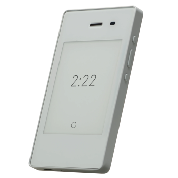
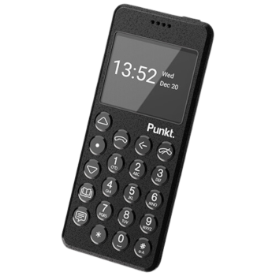
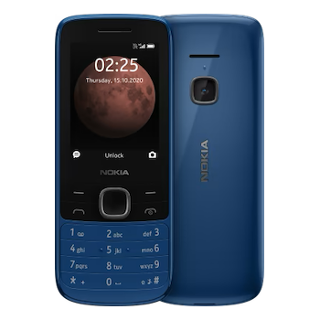

test
test
11:25pm
For a while, the idea of going to a dumb phone (well, a not-smartphone phone) has intrigued me. I've never really planned on it because, y'know, I just love to have that camera and my Spotify. Those alone are worth it.
But I'm becoming disillusioned with a lot of things about tech, I'm changing my view on life and what makes me happy, and being hype about the newest and best smartphone is incongruent with that. I'm currently chilling with my Google Pixel 5, and I love that thing. I'm planning on using it as long as I can, until it loses compatibility or can't hold a charge or completely shatters. And then I want to move to a cheaper, much less featured phone.
I have a few phones on my radar. The first is the Light Phone II. This one has been on my mind for many years now. It has an e-ink screen! And pretty much all the apps I want. Map, music player, podcast player, notes, and uhhh call and text. Great! It just kinda looks like shit though. But that's not something that should matter.

The second is the Punkt. MP02. Look at this cool thing! I just discovered this one a week or two ago. I don't know much about it but I love the blue and I LOVE the buttons instead of a touch screen. I don't like touch screens. And I'm loving the graphicless text-based interface of this thing (and of the Light Phone). Again, I don't know much about it, I dunno what features it has, but it's cool enough to intrigue me.

The last one is the Nokia 225 4G. Just found this one too. Nokia is reputable, I trust this one. My first two phones were Nokia! This thing has buttons, Nintendo 3DS level camera, and it's got SNAKE! Unfortunately, doesn't look like there's a music player aside from the built-in FM tuner but I might be mistaken. It has some shitty internet stuff and I dunno, don't care. But what really draws me to this one is the price point. $50! The other two on here were at least $300. This price kinda makes me wanna pick it up by the end of the year and just start having a dumb phone now!
So yah, that's what I'm thinkin' bout now when it comes to phones. I could have the Nokia, find a decent point-n-shoot camera, and an iPod and I would be alllll set :)